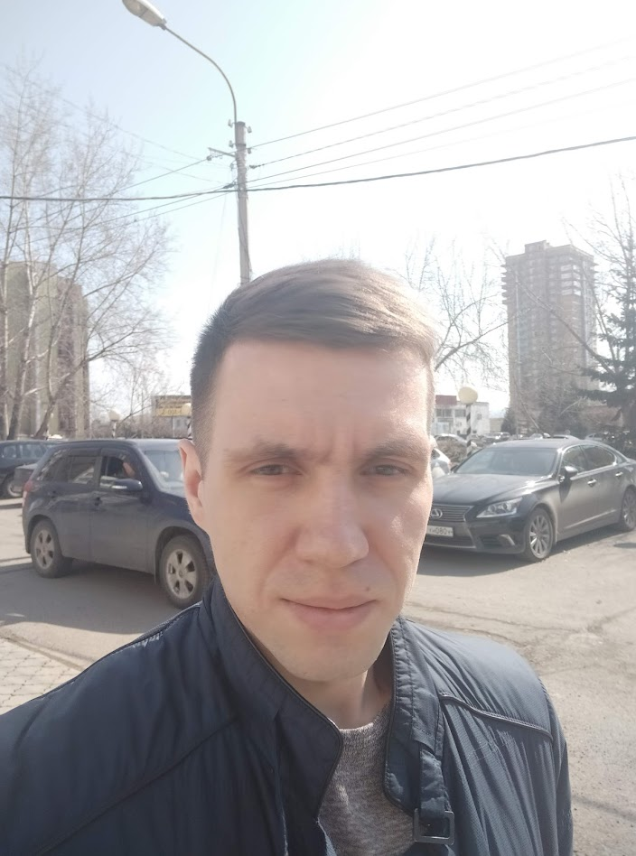

Лепехин Евгений
Дата рождения: 17.05.1993.
Проживаение: г. Химки, Московская область.
Готов к командировкам.
Готов к переезду.
Контактная информация:
Телефон: +7(996)427-69-61
Электронная почта: lepehinev93@gmail.com
Ссылка на Gihub

Желаемая должность: Ruby on Rails разработчик
Ключевые навыки:07.2021 — Настоящее время Сервис-инженер
АО НВБС
11.2020 — 06.2021 Электромонтер
ООО Сибинформ
2010 — 2015 КрасГАУ, факультеты «финансы и кредит» — неоконченное высшее, 5 курс